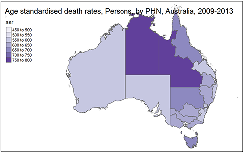
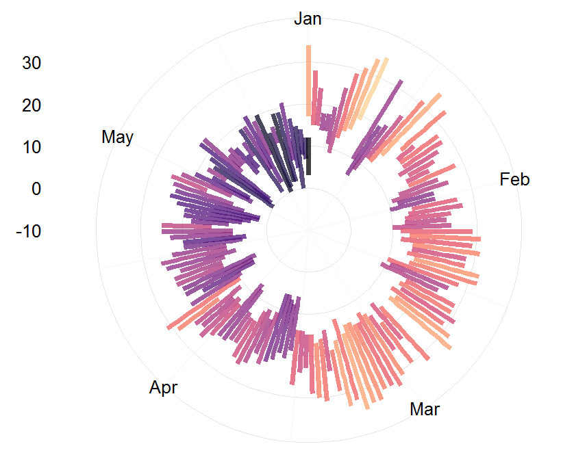
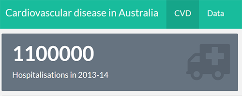
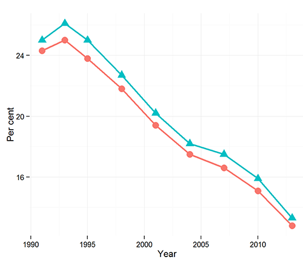

Here are some projects I have been working on in my spare time using R and R Studio. Click on the images to view.
| Deaths in Australia by Primary Health Network  | Weather radials  |
| ——————————————— | —————————– |
| Cardiovascular disease in Australia  | Tobacco in Australia  |
| ——————————————— |
Shiny app
I made a small Shiny app using Australian deaths data from the MORT (Mortality Over Regions and Time) books.